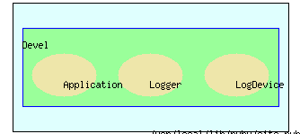

|
|||||||||
|  |
$Id: logger_rb.html,v 1.3 2002/02/01 01:25:06 nakahiro Exp $
This module is copyrighted free software by NAKAMURA, Hiroshi. You can redistribute it and/or modify it under the same term as Ruby.
See Devel::Logger at first.
| Required files |
| Classes and Modules |